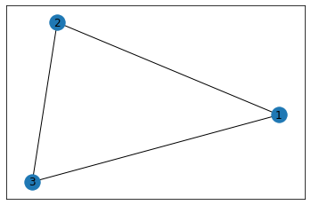
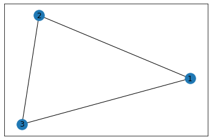
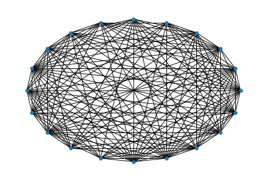

%matplotlib inline
import networkx as nx
import matplotlib.pyplot as plt
G = nx.Graph()
G.add_edge(1,2)
G.add_edge(1,3)
G.add_edge(3,2)
nx.draw_networkx(G)
plt.show()
October 1, 2022
模拟和研究一组以网络形式存在的社会实体之间关系的方法。实体可以是人、计算机或网页，关系可以相类似的人或事物、联系实体的连接(link)或友情。
%matplotlib inline
import networkx as nx
import matplotlib.pyplot as plt
G = nx.Graph()
G.add_edge(1,2)
G.add_edge(1,3)
G.add_edge(3,2)
nx.draw_networkx(G)
plt.show()
使用nodes.()能够获得节点集合，同样使用.edges()能够给出图中边的列表，由相连接的节点组成：
描述图的方法有多种，邻接表(adjacency list)列出每个节点的邻居节点，与G.nodes()用法相同，list[0]包含第一个节点的所有邻居节点。
{1: {2: {}, 3: {}, 4: {}},
2: {1: {}, 3: {}},
3: {1: {}, 2: {}, 4: {}},
4: {3: {}, 1: {}}}可将图描述为一个边的集合，输出结果中每个元组的第三个元素是边的属性，每一个边可以有一个或多个属性。创建的图很简单，下面的图不包含任何属性。
matrix([[0., 1., 1., 1.],
[1., 0., 1., 0.],
[1., 1., 0., 1.],
[1., 0., 1., 0.]])对于规模较大的图，这样的度量方式较为简陋，输出字典都有记录。这种情况下往往使用节点度的直方图来近似其分布。 下图中建立一个具有10000个节点、连接概率为1%的随机网络。提取该图的节点度直方图。
import networkx as ne #导入建网络模型包，命名ne
import matplotlib.pyplot as mp #导入科学绘图包，命名mp
#erdos renyi graphy
rg=ne.erdos_renyi_graph(20,0.8)
ps=ne.shell_layout(rg)#布置框架
ne.draw(rg,ps,with_labels=False,node_size=30)
mp.show()
为从图中得到见解，开发了很多算法。
连通性：一个图中的两个节点至少有一条路径，那么就是连通的。 利用NetworkX的库检查两个节点之间是否存在路径、计算最短路径及路径长度。
print(nx.has_path(G,source=1,target=9))
print(nx.shortest_path(G,source=1,target=9))
print(nx.shortest_path_length(G,source=1,target=9))True
[1, 6, 7, 8, 9]
4中介中心性(betweenness Centrality)这种类型的中心性以节点的最短路径数表示节点的重要性。中介中心性高的节点是网络的核心部分。 有很大最短路径通过中介中心性高的节点。
{0: 0.023148148148148143,
1: 0.023148148148148143,
2: 0.0,
3: 0.10185185185185183,
4: 0.0,
5: 0.23148148148148148,
6: 0.23148148148148148,
7: 0.38888888888888884,
8: 0.2222222222222222,
9: 0.0}{0: 0.4444444444444444,
1: 0.4444444444444444,
2: 0.3333333333333333,
3: 0.6666666666666666,
4: 0.3333333333333333,
5: 0.5555555555555556,
6: 0.5555555555555556,
7: 0.3333333333333333,
8: 0.2222222222222222,
9: 0.1111111111111111}接近中心性：
{0: 0.5294117647058824,
1: 0.5294117647058824,
2: 0.5,
3: 0.6,
4: 0.5,
5: 0.6428571428571429,
6: 0.6428571428571429,
7: 0.6,
8: 0.42857142857142855,
9: 0.3103448275862069}特征向量中心性：有向图，用节点表示网页，边表示连接。
{0: 0.3522089813920359,
1: 0.3522089813920358,
2: 0.28583473531632403,
3: 0.48102048812210046,
4: 0.28583473531632403,
5: 0.3976910106255469,
6: 0.39769101062554685,
7: 0.19586185175360382,
8: 0.048074775014202924,
9: 0.011164058575824235}